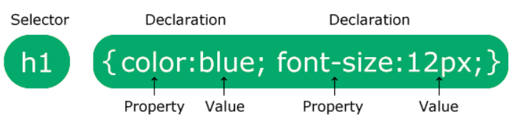
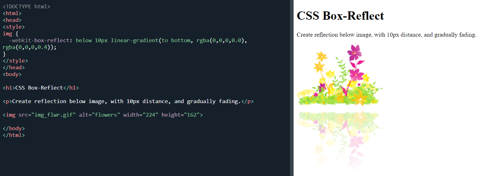
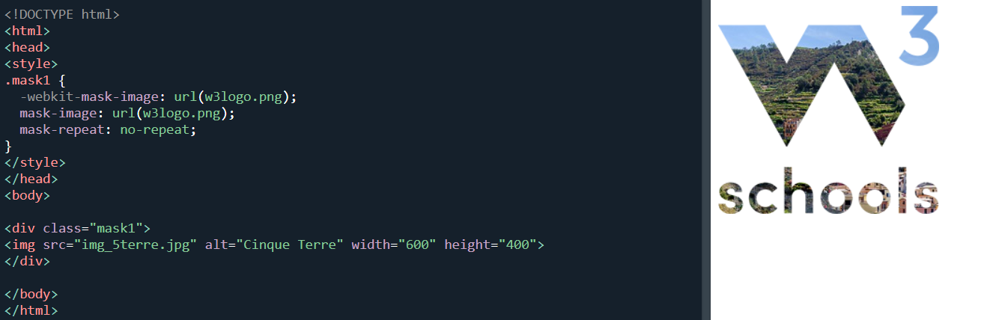

CSS
CSS nima ?
- CSS (Cascading Style Sheets) – bu veb-sahifalarning ko'rinishini boshqaruvchi stil tili. HTML yoki boshqa markup tillari bilan birgalikda ishlatiladi, CSS sahifadagi elementlarning vizual ko'rinishini belgilashga imkon beradi.
- Yani html code larga dizayn berish va har hil animatysiyalar qilishda yordam beradi.
CSS'ning paydo bo'lishi:
- CSS birinchi marta 1994-yilda Håkon Wium Lie tomonidan taklif qilingan. U shu paytda CERN da, Tim Berners-Lee bilan birga ishlayotgan edi.
- CSS ning asosiy g'oyasi HTML dan ko'rinishni ajratish va bir nechta HTML hujjatlar uchun bitta stil varaqasidan foydalanish imkoniyatini berish edi.
CSS1:
- Chiqish sanasi: 1996-yil, dekabr.
- Tavsif: CSS1 — bu CSS ning birinchi versiyasi bo'lib, uning maqsadi HTML elementlarini stilizatsiya qilish imkoniyatini yaratish edi. CSS1 o'z ichiga ranglar, shriftlar, oraliq masofalar va uslublar qo'llash kabi asosiy xususiyatlarni kiritdi.
CSS4:
- Chiqish sanasi: CSS4 hali to'liq rasmiylashtirilmagan va rivojlanayotgan bosqichda.
CSS syntax
CSS selectors
- #id
- .class
- *
- element
- element,element,…
CSS properties
box-reflect
below, above, left , right
mix-blend-mode
difference - bu value orqali elementimizni background qandayligiga qarab color change bo’ladi ya’ni orqa fon oq bolsa color qora bo’ladi.
background-blend-mode


shape-outside
shape-outside CSS xususiyati elementning matn o'ralgan shaklini belgilash uchun
ishlatiladi.
Bu, asosan, matnning qanday qilib element atrofida joylashishini aniqlashda foydalidir, xususan,
suratlar yoki boshqa shakllar bilan ishlashda.

shape-outside
CSS functions
shape-outside
oklch() funktsiyasi rangni Oklab rang modeliga asosan tavsiflaydi. Oklab rang modeli rangni oqim (L*), qizil-yashil (a*), va sariq-ko'k (b*) koordinatalarida tasvirlaydi. Bu rang modeli ranglarni ko'rish va moslashtirishni aniqroq qilish uchun mo'ljallangan.
- l: Oqlab rangining yorqinlik qiymati (0 to 1 oralig'ida).
- a: Qizil-yashil komponenti (odatda -1 dan +1 gacha).
- b: Sariq-ko'k komponenti (odatda -1 dan +1 gacha).
- alpha (ixtiyoriy): Rangning shaffoflik darajasi (0 dan 1 gacha).
oklab() funktsiyasi rangni Oklab rang modeliga asosan ko'rsatadi, ammo u rangni formatda tasvirlaydi. oklab() rang modelida ranglar ko'proq aniqroq va zamonaviy tarzda ko'rsatiladi.
- L: Rangning yorqinlik darajasi (0 dan 1 gacha).
- a: Qizil-yashil komponenti (odatda -1 dan +1 gacha).
- b: Sariq-ko'k komponenti (odatda -1 dan +1 gacha).
Override Global Variable With Local Variable